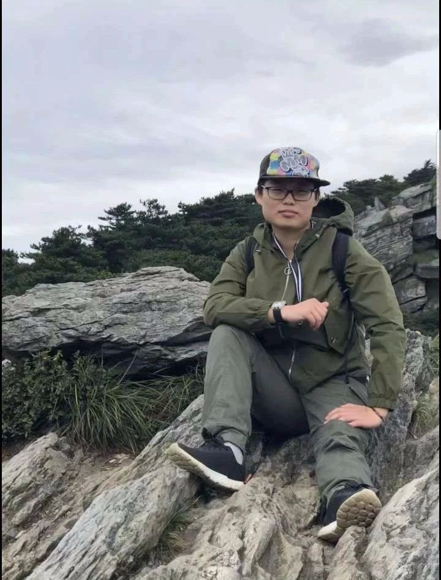
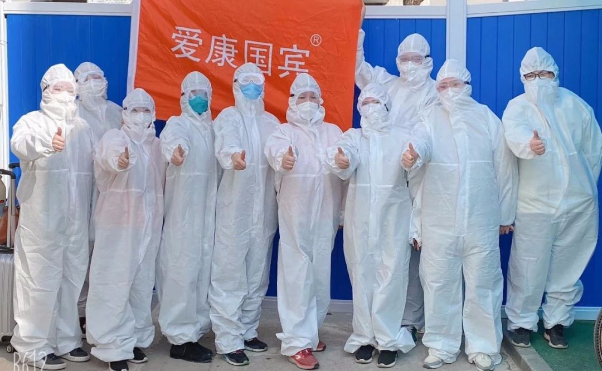
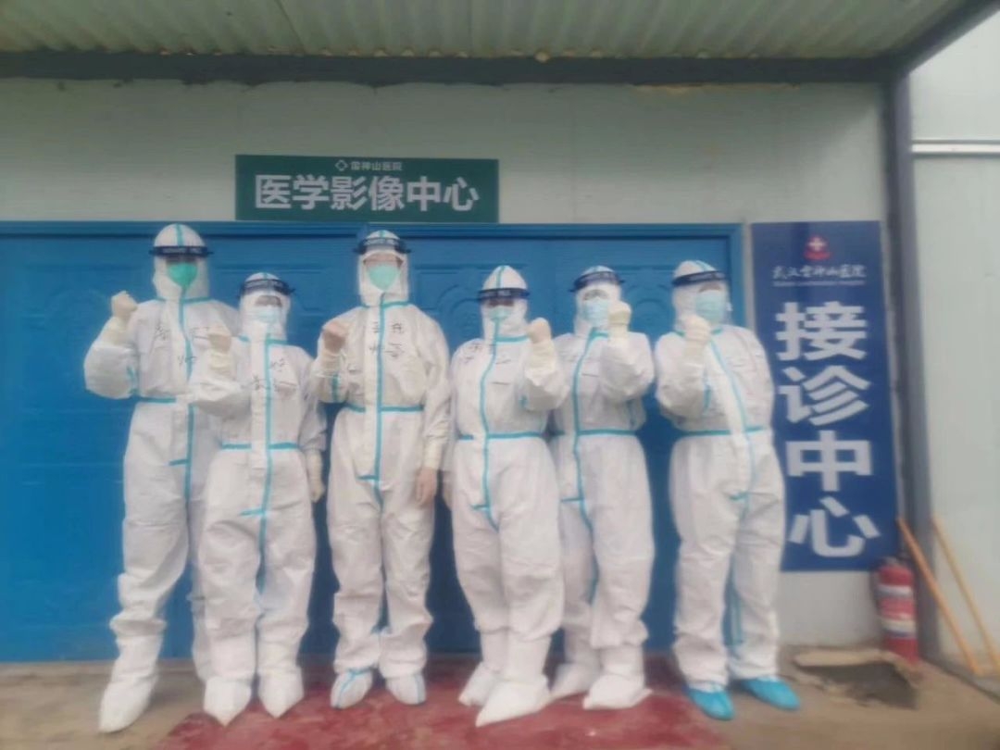
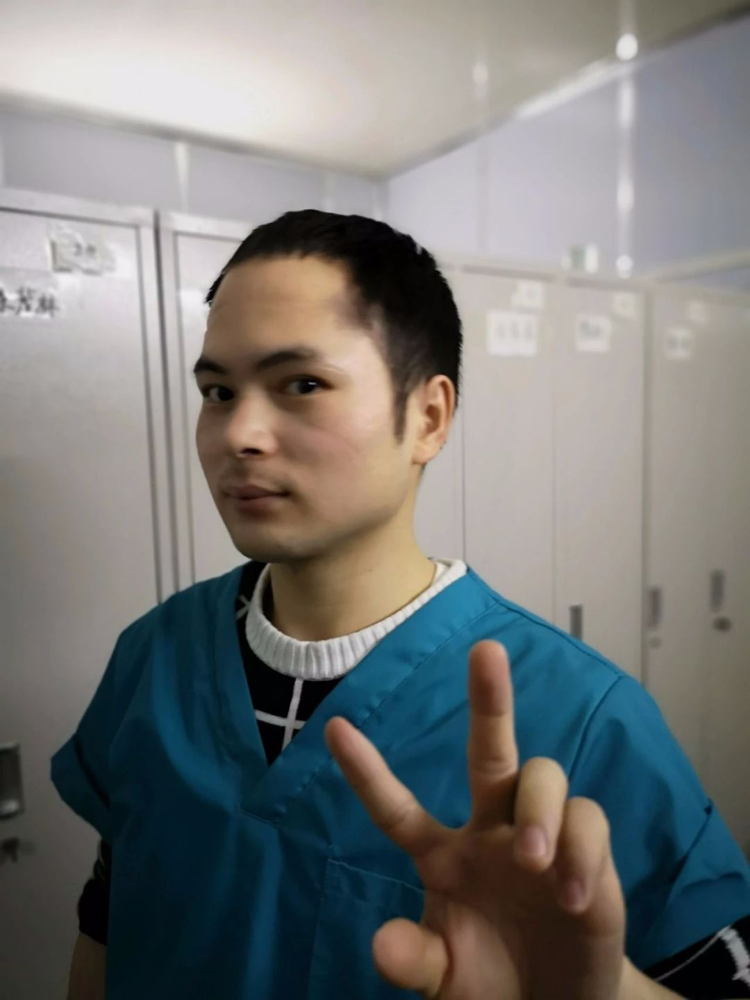
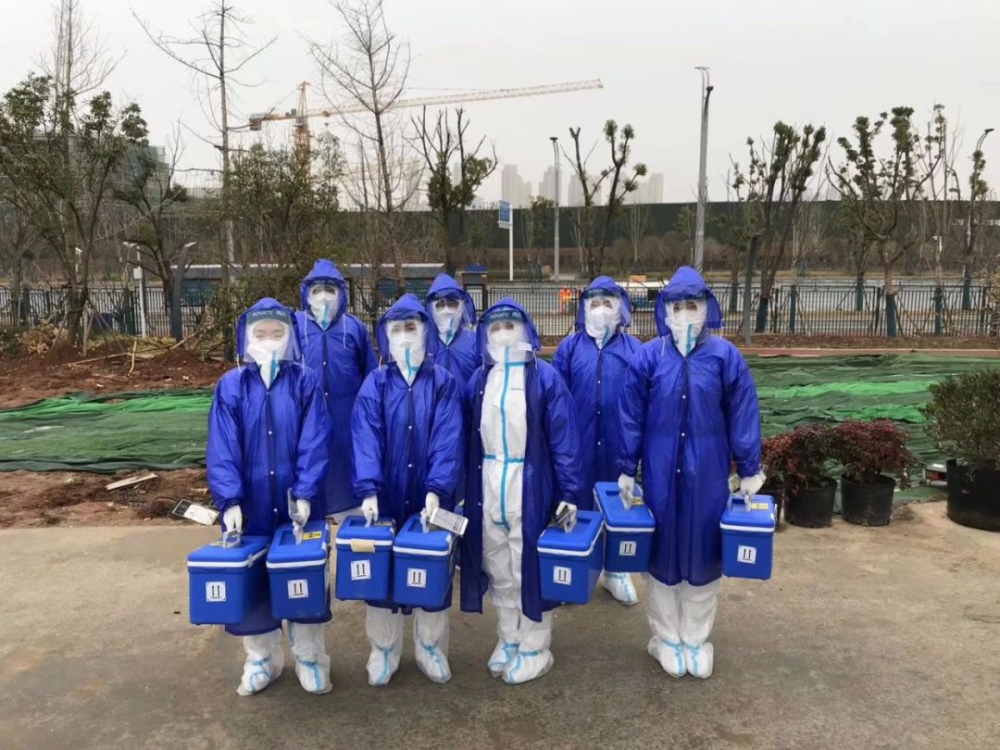
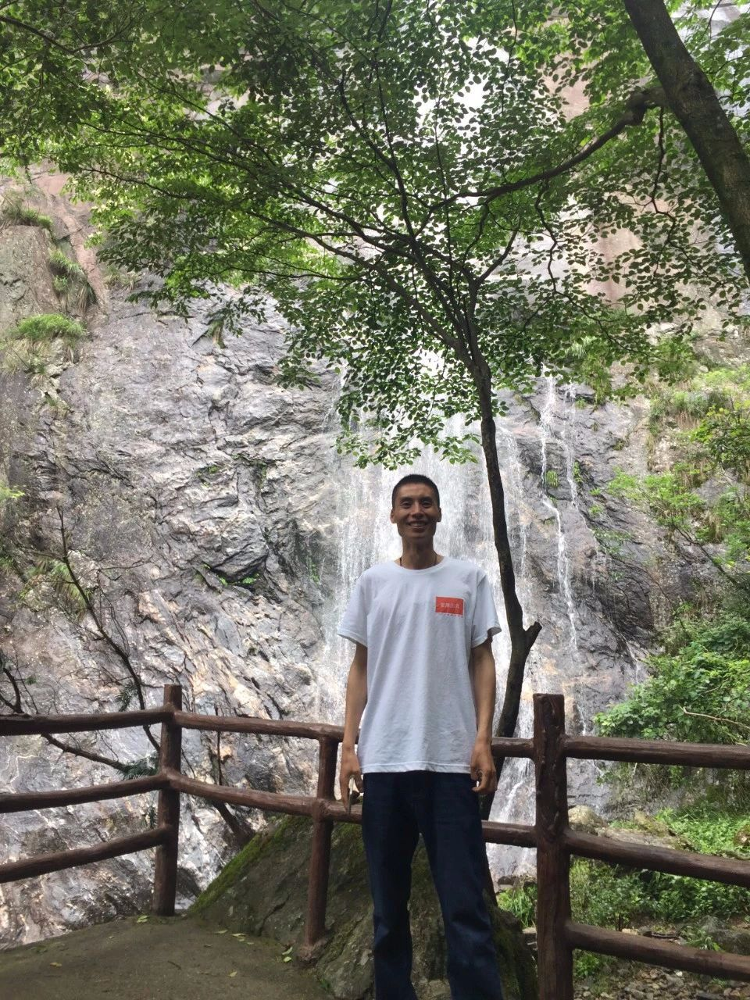
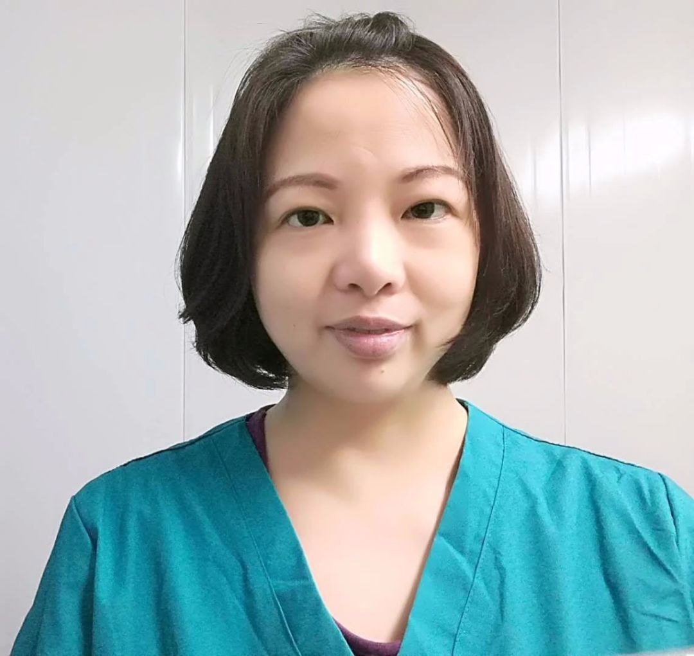
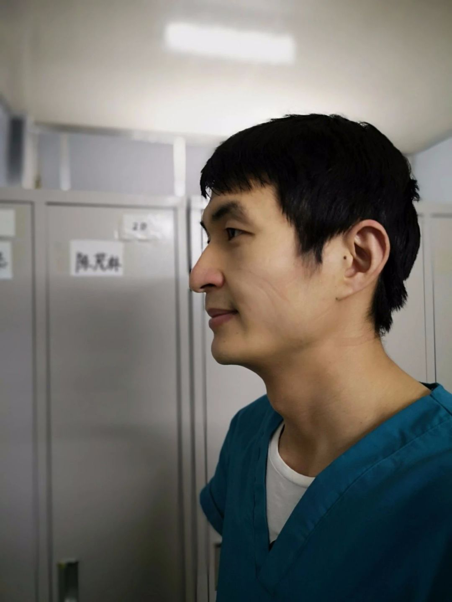

这些有名有姓的护士姐妹，在武汉以命相拼
原文链接 备份链接 尤其在最初仓皇无措的阶段，女性群体居多的一线护士站在了最前方，迎接急风骤雨，撑起最初的希望 文 |《财经》记者 刘以秦 陈亮 信娜 王小 编辑 | 谢丽容 又到一年一度3月8日国际妇女节，对中国所有女性，特别是一直坚 …

春回大地，这次人民战疫我们依然会赢！
2020年1月20日，爱康第一位医师爱康卓悦武汉汉街分院放射科副主任乐涛在武汉大学中南医院投身抗疫一线。
2020年2月5日，爱康国宾孝感银泰分院内科主治医师刘春高开始在孝南区卫生院支援。
2020年2月11日，爱康贵阳体检中心放射科技师石国敏赴湖北支援一线。
2020年2月12日，爱康国宾贵州观山湖分院放射科副主任医师廖博士赴鄂州支援一线。
2020年2月20日，武汉雷神山医院宣布医院32个病区全部开放。
2020年2月22日，爱康第一批志愿者正式进入武汉雷神山医院工作。
在驰援武汉雷神山医院的爱康志愿者中，有从襄阳驱车五个小时赶到武汉的同事，有从来没有一线医护经验的小伙子们，可以想见，他们在雷神山会经历远在千里之外的我们无法想象的一切。在此，我们记录下了他们在雷神山的一些瞬间，让我们看到每一个默默在这场战“疫”中付出的身影。当这场战役结束时，这些志愿者的名字大多会被忘记，但我们相信，正是因为这些普通人的守护和付出，寒冬即将过去，春天就要来临。
2月22日
刘文婷
爱康国宾武汉金墩分院护士
武汉雷神山医院志愿者
.
就是这股子帅劲儿！
接到中南医院体检通知的时候，我正在吃中饭，我什么都没想，放下碗和妈妈就开始收拾东西。爸爸听说只有一个小时，正在吃饭的他立刻放下了碗，下楼去社区给我联系车辆，送我上车直到看我上车远去。其实我之前就联系过武昌负责招募志愿者的老师，但一直都在等消息，看着以前的同事和同学都奋战在一线，我觉得自己是个逃兵。
拍完CT等了两个小时，我顺利上了去雷神山的大巴，和我一起上大巴的还有三个同事。等待过程中，我看到同事们陆续拎着行李赶到，听说还有从黄冈和郑州开车过来的同事们，希望他们也一切顺利，我们能尽快一起继续并肩作战，自己的城市我们自己来守护！

2月22日在中南医院体检的爱康人合影
2月25日
吴宜萍
爱康卓悦武汉亚贸分院院长
武汉雷神山医院志愿者

穿上防护服之前在爱康年会上的院长
发小看了我的朋友圈，发来消息说“我当时就怕你太冲动上前线了，果然你还是去了，一定要保护好自己，一切都好好的，疫情结束了你回来我们要聚一聚，我们等你”。
没忍住哭了。
以前的同事从大年三十开始就坚守在抗疫一线没有停歇过 – 武汉第七医院是第一批定点医院，武汉紫荆医院是第三批定点医院。虽然我现在在雷神山医院，大家在不同的战场，但我们都在做同一件事情，让我觉得我们还是在一起并肩作战，就像以前一样，这是我的荣耀。
说实话，在外面，我们会觉得非常恐慌，只要你和我说，这位是新冠病人，我一定会离得远远的。而一旦来到了这里，每天都在近距离接触病毒，我们反倒不怕了，每个人都抢着做事情，拼尽全力。
我其实挺佩服包括我的同事们在内的很多志愿者，他们有些并没有像我一样有医学背景，我来这里，是作为医学专业的人的义不容辞，而他们有勇气来，是一种特别纯粹的信念，我们就像是一个小家庭，一起上班，互相帮助。
没有来雷神山医院之前，真的很难体会这种感觉，即便自己是医生，也从没用到过这类的防护服穿法。医护人员们长时间、高强度的工作状态，让我对自己从事的职业有了新的认知。
其实，患者们的精神面貌大多数特别好，没有悲观或者绝望的情绪。因为随着治疗，大家也发现新冠病毒虽然感染力强，但其实并没有那么可怕，只要积极配合医生，都不会有太大问题。每天都在看着人们欢天喜地的出院，也希望这里的人会越来越少。

支助中心的部分志愿者在CT室外合影
2月27日
王志逸
爱康集团武汉区域健康管理部健康顾问
武汉雷神山医院志愿者

摘下口罩来比个Yeah吧！
昨天是一整天的培训。关于怎么穿脱防护服，关于怎么防护。光穿防护服就要半小时，要先穿隔离衣，戴一层N95口罩，戴护目镜，再穿防护服，再戴一层口罩，穿上以后，感觉整个人都难以动弹，呼吸之间护目镜都是水汽，实在是不怎么舒服。培训的老师不停地强调防护的要点，心里总是有点怕，感觉就和强迫症一样，不停地背防护要点和注意事项。
今天的CT室特别的忙，100好几的患者，两台CT，等的时间久了，难免有抱怨。时间一长，口罩带勒的脑袋也一阵一阵的痛，但都顾不上了，一波一波患者排队的秩序要维护，CT姿势的宣讲也容不得半点马虎，不过很开心的是，患者们离开的时候，一个接一个的朝我竖起大拇指，让我觉得这一切都值得。
今天公司同事还特意送了日达仙（注射用胸腺肽，用于提升自体免疫力）过来雷神山，还教我们怎么注射和注意事项，心里暖暖的，感觉背后有一个巨人在支撑着，也就没啥好怕的了。

在武汉雷神山医院门口接收日达仙
2月29日
段中科
爱康集团武汉区域健康管理部健康顾问
武汉雷神山医院志愿者

春暖花开时，你一定可以旧地重游！
其实我进雷神山医院，家里人到现在都不知道。我只是觉得自己应该来，在爱康三年，一直在从事和健康相关的事业，生命高于一切，所以在看到需要志愿者的邮件时，我就来了。
这里的感触很多，每一件事情和医院外都不一样。在医院外我们很怕遇到患者，可是这里都是患者，他们都很积极很感恩，我经常看到患者看到医护人员的时候眼里闪着泪花，每天扶助他们的时候，都会不停地跟我们说谢谢，辛苦了，其实真的不用这么客气。
爱康的同事们也都分配在一个部门里，大家在一起相互关照，大家每天都很认真的把很简单很简单的事情做好，比如做CT示范，比如只是开个门，比如只是扶个患者，感觉到众志成城！
防护服其实还好吧，就是觉得有点热，情况也每天都在变好，进来的病人越来越少，出院的病人越来越多。

部分爱康志愿者在武汉雷神山医院门口合影
3月3日
涂梅芳
爱康卓悦武汉汉街分院护士
武汉雷神山医院志愿者

我们一起！武汉加油！
虽然我是护士，但这种三级防护服一穿就是五个小时起，每天都要穿的阵仗也是第一次经历。今天看到一个志愿者的防护服由于抱患者过于用力破裂的时候，还是有点害怕，不过看到那位大哥反而很淡然的安慰患者不用担心的时候，反而觉得心很定。
可能由于疫情，武汉按下了“暂停键”，但天南地北各行各业的志愿者为了同一个信念来到这里，让每一个人的恐惧都少了很多。穿着防护服也认不出来大家的脸，但每天碰到都会互相帮助互相鼓励，在病区见面时互喊一声“加油”，每一位医护人员都热情有礼，每一位志愿者都汗流浃背的帮助患者检查，协助患者出院，每个人都在为了这座城市恢复昔日的车水马龙而拼尽全力！

在武汉雷神山医院墙上的涂鸦
3月6日
陈亚平
爱康集团武汉区域运营总监
武汉雷神山医院志愿者

摘掉口罩脸上的印子要过很久才能消散掉
今天是进雷神山的第三天，上午培训以后匆匆吃了几口饭就换上防护服了，想着早点上岗能快点把上午班的同事们换下来，喝了两杯水还被同事们佩服了，说你不怕一会穿着防护服想上洗手间吗？
C4病区的患者做完CT以后，本来应该我们的车送她们回去 - C4是离CT室较远的病区，她们拒绝了，笑着说：“我们想走一走，太阳真好，能在太阳下面走一走晒一晒就是最大的幸福”。我听着鼻子有点酸。
打开行李箱看到4岁的大儿子塞进来的小玩具，心里也是满满的，他说：“爸爸，机器人是我派去保护你的，他可以帮你打妖怪，你一定要带好哦！还有还有，那些积木是给你的玩具，你不忙的时候，记得要帮我拼个礼物，带回来呀！”
气温一天一天的回升，隔离衣里面的衣服汗湿以后粘在身上凉凉的很不舒服，但这又有什么关系，温度回升病毒就会慢慢收敛了。每天接诊做CT的患者越来越多了，疫情应该很快就会过去了吧。疫情结束后，就想带着大儿子在武大的操场上踢上一场球，他该高兴坏了。

陈亚平的行李箱里散落着大儿子塞进来的积木，从行李箱盖拉链上探出小脑袋的就是他的机器人守护神
3月7日
鲁俊
爱康集团武汉区域健康管理部健康顾问
武汉雷神山医院志愿者

虽然能明显看出来开了滤镜，但小伙子也是帅哥一枚！
2月22号就做了CT检查， 但4号才通知要上岗，说实话，当时报名时候的一腔热血两个礼拜时间温度也降了不少。后来又想怕啥的，公司特意安排给每个人都准备了日达仙注射提升免疫力，给我们和家人买好了保险，还给了各种各样的补给，第一批第二批进去的同事不都好好的么，做好防护心态乐观，我可以的！
不过今天天气不大好，工作时间不得不被延长了。一下午的班，接待了145个病人做CT，也是我进来这些天的最高记录了。想想要是这个强度，穿着防护服，这么些天下来，我还不瘦个十斤八斤的？
一个80岁的老奶奶，行动不方便，到的时候救护车坐满了，她也上不去。我决定推她到CT室，一路上踩了几个坑，一脚的水，老奶奶也没有嫌弃颠簸，还乐呵呵的跟我聊天。到了地方送她进去做检查的时候，她跟我说了句：“小伙子，长命百岁。” 我晓得她文化程度也不高，这句话是她发自内心的祝福。
武汉的情况一天一天在好转，春暖花开的时候，我们能摘下口罩，和人握手拥抱，去好好吃一次“过早”！

小鲜肉鲁俊，加油！
3月8日
陈娜
爱康集团武汉区域健康管理部健康顾问
武汉雷神山医院志愿者

她和小仙女们一样，能去多远就去多远！
来雷神山也已经15天了，刚开始报名的时候是想着要守护自己的城市，但真的到了雷神山的时候，也是有忐忑的，不知道怎么面对病毒。培训的时候一直心里不停的背防护要点，第一次进病区的时候也怕这怕那，总担心有疏忽，担心口罩会不会松掉，护目镜会不会掉，但真的忙起来，和病人们真正在一起的时候，反而什么都不想了，只想怎么能更好帮助到他们。
很想念我的家人和朋友，今天看到家人发朋友圈祝我平安，瞬间泪奔了。

中间图片画红圈的为陈娜在武汉雷神山医院的工作照片
我们的志愿者，在武汉雷神山医院的“支助中心”，主要是帮助患者检查、复诊、协助出院等，用陈亚平的话说：“支助中心是管道，是桥梁，我们是连接病区和检验室、和放射科，以及出院的管道和桥梁。”
每天穿着不透气的好几层防护服，不能吃喝不能上厕所至少五个小时，他们就这样一天天的坚持下来，这样的日子也许还要持续一段时间。他们不是为了逞英雄，不是为了博名声，他们中很多人生于武汉长于武汉，或者在武汉生活了很久，他们只是想用一个个普通人的力量，终结这场战“疫”，获得最后的胜利！
“我们路过那些高楼大厦，看到那些灯光，那里是1500万的武汉人民，因为这样的时刻，他们几个礼拜就这样呆在家里。而当我们与武汉同事沟通此事的时候，他们说，这是我们的责任，这是我们肩上的责任，要保护世界。
我认为这一点很重要，我们要认识到武汉人民所作出的贡献，世界欠你们的。
我想当这场疾病疫情过去的时候，我希望有机会，能代表世界再一次感谢武汉人民。我知道在疫情过程中，中国人民奉献了也经历了很多，然而武汉人民，他们是砥砺前行的！
在此刻，世界应该了解中国所做的事情！”
- 联合专家考察组外方组长
WHO总干事高级顾问
布鲁斯·艾尔沃德
愿春早来 花枝春满
山河无恙 人间皆安
本文仅代表作者观点，不代表本刊立场
推荐阅读
▼


原文链接 备份链接 尤其在最初仓皇无措的阶段，女性群体居多的一线护士站在了最前方，迎接急风骤雨，撑起最初的希望 文 |《财经》记者 刘以秦 陈亮 信娜 王小 编辑 | 谢丽容 又到一年一度3月8日国际妇女节，对中国所有女性，特别是一直坚 …
原文链接 备份链接 有人说我们这样的医护是志愿者，不是“国家队”。但这个我们不在乎。我在这里的同事，一个原来是自己开诊所、把诊所停业跑来支援的医生说：“我既然来了就是把生死置之度外了。”我没有去想他说的那么大的问题，我只想能尽到自己的职 …
原文链接 备份链接 早春的武汉春风拂面，这两天接到爸妈打来的电话，询问我的近况。我告诉他们我过得好着呢：吃着大餐、住着五星级的酒店。其实，我特别想念妈妈蒸的馒头，就算只就着大蒜，我也能吃两个碗大的馍馍。 口述 | 毛 平 整理 | 沈 …
原文链接 备份链接 - 疫 情 之 下 - 如今，针对医护人员的出行难，政府已出台各种措施，但还是有个别的需求难以得到满足。高宇说，他会一直坚持到医护人员交通困难问题缓解的那一天。 ” 2020年1月23日，武汉市新型冠状病毒感染的肺炎疫 …
原文链接 备份链接 🎧 点击上方图片，跳转「故事FM」小程序，收听真人讲述。记得添加「我的小程序」，一键收听全部故事哟！ 在这次疫情期间，故事FM 采访过武汉的医生、方舱医院的确诊者、还有武汉的癌症患者……，我们试图通过武汉各种群体的故 …